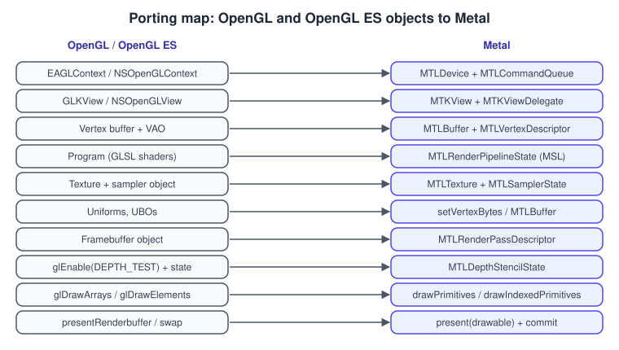
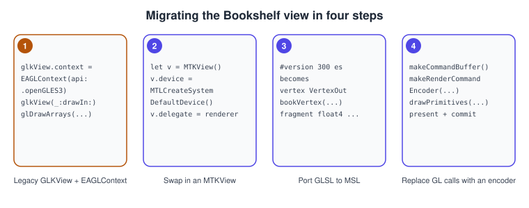

OpenGL ES on iOS and macOS
|
This content was generated with the assistance of AI and should be verified against the official documentation before being relied on in production. |
Apple deprecated OpenGL in macOS 10.14 and OpenGL ES in iOS 12, both in 2018, and has not added to either since. Existing apps keep
running, but nothing new is coming and Apple’s documentation points to Metal for high-performance graphics. This page explains what
that means for an OpenGL developer in 2026: what still works and with which limits, what the legacy classes (EAGLContext,
GLKView, NSOpenGLView) were for so you can read old code, how to move a view to Metal’s MTKView, and when ANGLE’s Metal backend is the cheaper route.
The facts were checked in November 2026. The versions documented are the last ones Apple shipped: OpenGL 4.1 core and 3.2 core on macOS (with the legacy profile), and OpenGL ES 3.0 on iOS, and the comparison target is Metal with the Metal Shading Language (MSL). OpenGL itself is documented at 4.6/GLSL 4.60 elsewhere in this section; macOS never reached it. Requirements: Xcode and an Apple developer toolchain for the Swift examples; Apple Silicon or Intel Macs run both APIs. The scope is the platform story and the migration; the Metal API itself is taught in the Metal sub-section of this site (see Migrating from OpenGL for the concept mapping), and the Apple app platform pages are the place for app structure: UIKit and AppKit Interop and SwiftUI Drawing, Animation and Gestures.
The general concepts behind the porting map are in Explicit vs Implicit APIs and Cross-Platform Translation Layers.
Status in 2026
| Item | Status | Consequence |
|---|---|---|
OpenGL on macOS |
Deprecated in macOS 10.14 (Apple’s archived Mac programming guide carries the notice). Still present on current systems. |
Compiles with deprecation warnings (silence with |
OpenGL versions on macOS |
Legacy contexts, a 3.2 core profile, and a 4.1 core profile. 4.1 is the ceiling, so compute shaders, shader storage buffers, image load/store, |
The Bookshelf GL desktop application targets 4.1 core so that it runs here; its optional 4.5 and 4.6 paths are guarded. |
OpenGL ES on iOS |
Deprecated in iOS 12. The highest version available through |
No compute shaders, no ES 3.1 or 3.2 features through Apple’s own implementation. |
GLKit |
Deprecated with OpenGL (GLKView, GLKViewController, GLKBaseEffect, GLKMatrix, GLKTextureLoader). |
Do not start new code on it. |
Metal |
The recommended replacement on every Apple platform, including visionOS. |
New work, and most ports, belong here. |
Do not take the 4.1 limit from this table alone: print GL_VERSION, GL_SHADING_LANGUAGE_VERSION and GL_RENDERER at start-up on the Macs you care about,
the same habit as on every platform.
Reading legacy code: the classes you will meet
Old Apple-platform OpenGL code is organised around a handful of classes. Knowing what each did makes a migration much easier.
| Class | What it did |
|---|---|
|
The OpenGL ES context object, created with a rendering API (ES 2 or ES 3). The equivalent of an EGL context on other platforms; made current per thread with |
|
The layer or view that owns the renderbuffer connected to the screen. |
|
Drove the frame loop and pause behaviour; its |
|
A fixed-function-style effect and a matrix library, so apps did not write shaders for simple scenes. |
|
Loaded images into GL textures. |
|
The AppKit view, context and pixel-format selection. The pixel format attribute |
CGL |
The C interface under |
On macOS, the cross-platform libraries (GLFW, SDL) hide these classes. The Bookshelf GL desktop app, which creates its window through GLFW, therefore reaches macOS with a hint set before the window is created, as the desktop page shows in Getting Started on the Desktop: request a 4.1 core, forward-compatible context. A request for a higher version, or for a compatibility profile with new features, fails or returns the legacy profile.
The porting map: GL to Metal
A migration is mostly a change of vocabulary: every OpenGL object has a Metal counterpart, but Metal makes state explicit and builds it ahead of time. The figure is the cheat sheet; the sections that follow use it.

Key differences that the table cannot show:
-
State is immutable and prebuilt. A GL program plus the blend, vertex-layout and framebuffer-format state that you set later becomes one
MTLRenderPipelineState, created once. Depth and stencil state is a separateMTLDepthStencilState. -
Commands are encoded, then submitted. You obtain a command buffer from a queue, open a render command encoder with a render pass descriptor, encode draws, end encoding, present the drawable and commit. There is no implicit "current" framebuffer or program.
-
Shaders are MSL, not GLSL, compiled with the app by default (a
.metalfile in the target). A GLSL to MSL translator (the SPIR-V route, covered in Shading Languages Landscape) can help, but plan to review the output. -
Coordinate conventions differ. Metal’s normalized device coordinates have a depth range of 0 to 1 (like Vulkan and unlike default OpenGL’s -1 to 1); framebuffer and texture coordinates start at the top-left. Check matrices and texture coordinates when porting. The conventions are summarised in Coordinate Spaces and Transforms.
A migration, step by step
The Bookshelf view is the migration target: a view that shows the textured, rotating book quad. The legacy version is a GLKView that
owns an EAGLContext. The migration has four steps, illustrated below, and each can be committed on its own.

Step 1: what you start from
A representative legacy view (shown only to be recognised and replaced):
import GLKit
import OpenGLES
// Legacy, deprecated in iOS 12. Shown for recognition, not for new code.
final class LegacyBookViewController: GLKViewController {
private var context: EAGLContext!
override func viewDidLoad() {
super.viewDidLoad()
context = EAGLContext(api: .openGLES3)
let glView = view as! GLKView
glView.context = context
glView.drawableDepthFormat = .format24
EAGLContext.setCurrent(context)
// compile shaders, create buffers and textures here
}
override func glkView(_ view: GLKView, drawIn rect: CGRect) {
glClearColor(0.05, 0.05, 0.08, 1.0)
glClear(GLbitfield(GL_COLOR_BUFFER_BIT | GL_DEPTH_BUFFER_BIT))
// glUseProgram, glBindVertexArray, glDrawArrays ...
}
}Source: Apple: GLKit
Step 2 and 3: a Metal view and ported shaders
The MTKView replaces GLKView and the context together: it owns the drawable, the depth texture and a display link, and calls its
delegate once per frame. The vertex data carries position and texture coordinate, the same layout as the GL quad.
import MetalKit
import simd
struct BookVertex {
var position: SIMD2<Float>
var uv: SIMD2<Float>
}
final class BookRenderer: NSObject, MTKViewDelegate {
private let queue: MTLCommandQueue
private let pipeline: MTLRenderPipelineState
private let vertices: MTLBuffer
private let cover: MTLTexture
init?(view: MTKView) {
guard let device = MTLCreateSystemDefaultDevice(),
let queue = device.makeCommandQueue(),
let library = device.makeDefaultLibrary() else { return nil }
view.device = device
view.colorPixelFormat = .bgra8Unorm_srgb
view.clearColor = MTLClearColor(red: 0.05, green: 0.05, blue: 0.08, alpha: 1)
let descriptor = MTLRenderPipelineDescriptor()
descriptor.vertexFunction = library.makeFunction(name: "bookVertex")
descriptor.fragmentFunction = library.makeFunction(name: "bookFragment")
descriptor.colorAttachments[0].pixelFormat = view.colorPixelFormat
// y is up and v is top-down: the quad's uv origin is the top-left of the image.
let quad: [BookVertex] = [
BookVertex(position: [-0.5, -0.75], uv: [0, 1]),
BookVertex(position: [ 0.5, -0.75], uv: [1, 1]),
BookVertex(position: [-0.5, 0.75], uv: [0, 0]),
BookVertex(position: [ 0.5, 0.75], uv: [1, 0]),
]
do {
self.pipeline = try device.makeRenderPipelineState(descriptor: descriptor)
// Add bookshelf-cover.png to the asset catalog as an image set named "bookshelf-cover".
self.cover = try MTKTextureLoader(device: device).newTexture(
name: "bookshelf-cover", scaleFactor: 1, bundle: nil,
options: [.SRGB: NSNumber(value: true)])
} catch {
return nil
}
guard let buffer = device.makeBuffer(bytes: quad,
length: MemoryLayout<BookVertex>.stride * quad.count,
options: []) else { return nil }
self.vertices = buffer
self.queue = queue
super.init()
view.delegate = self
}
func mtkView(_ view: MTKView, drawableSizeWillChange size: CGSize) {}
func draw(in view: MTKView) {
guard let pass = view.currentRenderPassDescriptor,
let drawable = view.currentDrawable,
let commands = queue.makeCommandBuffer(),
let encoder = commands.makeRenderCommandEncoder(descriptor: pass) else { return }
encoder.setRenderPipelineState(pipeline)
encoder.setVertexBuffer(vertices, offset: 0, index: 0)
encoder.setFragmentTexture(cover, index: 0)
encoder.drawPrimitives(type: .triangleStrip, vertexStart: 0, vertexCount: 4)
encoder.endEncoding()
commands.present(drawable)
commands.commit()
}
}Source: Apple: MTKView
The matching Metal Shading Language, in a Shaders.metal file of the same target. Compare it with the GLSL ES pair on OpenGL ES on Android: the
body of the fragment shader is one line in both.
#include <metal_stdlib>
using namespace metal;
struct BookVertexIn {
float2 position;
float2 uv;
};
struct BookVertexOut {
float4 position [[position]];
float2 uv;
};
vertex BookVertexOut bookVertex(uint vertexId [[vertex_id]],
constant BookVertexIn* vertices [[buffer(0)]]) {
BookVertexOut out;
out.position = float4(vertices[vertexId].position, 0.0, 1.0);
out.uv = vertices[vertexId].uv;
return out;
}
fragment float4 bookFragment(BookVertexOut in [[stage_in]],
texture2d<float> cover [[texture(0)]]) {
constexpr sampler linearSampler(filter::linear, mip_filter::linear, address::clamp_to_edge);
return cover.sample(linearSampler, in.uv);
}The example omits the model-view-projection matrix on purpose, so the migration of the draw loop stays visible. To spin the book, pass a
matrix with setVertexBytes (for a few hundred bytes of per-draw data) or a buffer, and multiply in bookVertex, exactly as the
GL vertex shader multiplied by uMvp. In SwiftUI the same renderer sits behind a UIViewRepresentable or NSViewRepresentable that wraps
the MTKView; see the Apple interop page linked in the introduction.
Step 4: replace the calls, delete the old
Once pixels match, remove the GL code in the order the figure shows. A few details tend to be forgotten:
-
GL state toggles (
glEnable(GL_DEPTH_TEST), blending) become fields of the depth-stencil and pipeline descriptors. If the view needs depth, setview.depthStencilPixelFormatand create anMTLDepthStencilState. -
glGetErrorhas no equivalent; use the Metal API Validation and Shader Validation options in the Xcode scheme and the GPU frame capture in Xcode’s Metal debugger. -
Texture upload with
glTexImage2DbecomesMTKTextureLoaderor aMTLTextureDescriptorplusreplace(region:...). -
Uniform buffers need alignment care, as std140 does: the struct layout rules in MSL differ from GLSL (a
float3is aligned to 16 bytes). The data-layout tables in Uniforms, UBOs and SSBOs help when porting.
Staying on OpenGL ES: ANGLE’s Metal backend
Rewriting a large renderer is not always worth it. ANGLE, the OpenGL ES implementation that Chromium uses, has a Metal backend that runs OpenGL ES calls on Apple platforms: ANGLE’s backend table lists Metal as complete on macOS 10.14 and later and on iOS 12 and later, with desktop GL deprecated on macOS. ANGLE implements the EGL 1.5 specification and ES 3.x, so existing portable ES code can run, via ANGLE’s EGL, on top of Metal.
Practical points:
-
You build or ship the ANGLE libraries (
libEGLandlibGLESv2from ANGLE) with the app and make EGL calls against them, with the view’s Core Animation layer as the native window. ANGLE’s repository documents the build and the platform requirements. -
You keep your GLSL ES shaders and your GL calls, but you inherit ANGLE’s feature support, which is per backend and is listed in the same README. Check the ES 3.1 and 3.2 status of the Metal backend before relying on compute shaders or geometry shaders.
-
It is a bridge, not a destination. The code is still OpenGL ES, and new features on Apple platforms (ray tracing, mesh shaders, MetalFX) are Metal only.
Where a cross-platform engine is already in use, the engine’s own Metal backend is a better answer than either approach; see Graphics APIs vs Game Engines.
Choosing a route
Common mistakes
-
Assuming OpenGL 4.6 on a Mac. The ceiling is 4.1 core; a shader that uses compute,
layout(binding = N)or a#version 450line does not compile there. Use feature detection and glad’s version check. -
Forgetting the core profile request. Without the profile hint, macOS gives a legacy context that rejects
#version 410 coreshaders. -
Porting shaders without checking depth range and flips. The picture appears upside down or clipped.
-
Treating deprecation warnings as noise forever. Silence them with
GL_SILENCE_DEPRECATIONonly when you have a plan. -
Targeting iOS with ES 3.1 features. The iOS context tops out at ES 3.0; use Metal compute instead.
What older guides get wrong today
| Older guide says | Today |
|---|---|
OpenGL on the Mac is a first-class, evolving API (AGL, |
Deprecated since macOS 10.14; capped at 4.1 core. |
Build iOS 7 apps with ES 2.0 or 3.0 using |
ES is deprecated since iOS 12; GLKit too. Use Metal or ANGLE. |
A single SDK (SIO2) shares an OpenGL ES 2.0 engine between iOS and Android. |
That SDK is defunct. Share C++ and use Metal on Apple platforms, Vulkan or ES on Android. |